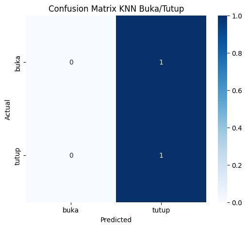

Modeling Identifikasi Suara Buka Tutup#
Hasil Aplikasi#
https://t7fqkvcqvlww9inpxuubnx.streamlit.app/#
import librosa
import numpy as np
import pandas as pd
from sklearn.model_selection import train_test_split
from sklearn.preprocessing import StandardScaler
import pickle
import sounddevice as sd
import soundfile as sf
from IPython.display import Audio, display
import pickle
from sklearn.neighbors import KNeighborsClassifier
from sklearn.metrics import accuracy_score, confusion_matrix, classification_report
import matplotlib.pyplot as plt
import seaborn as sns
X_train, X_test, y_train, y_test = train_test_split(
X, y, test_size=0.2, random_state=42, stratify=y
)
---------------------------------------------------------------------------
NameError Traceback (most recent call last)
Cell In[2], line 2
1 X_train, X_test, y_train, y_test = train_test_split(
----> 2 X, y, test_size=0.2, random_state=42, stratify=y
3 )
NameError: name 'X' is not defined
metadata_path = "data_preprocessed/metadata.csv"
df = pd.read_csv(metadata_path)
print(df.head())
split label file_path
0 train buka data_preprocessed\train\buka\buka_1.wav
1 train buka data_preprocessed\train\buka\buka_2.wav
2 train tutup data_preprocessed\train\tutup\tutup_1.wav
3 train tutup data_preprocessed\train\tutup\tutup_2.wav
4 val buka data_preprocessed\val\buka\buka_1.wav
def extract_features(file_path, n_mfcc=13):
y, sr = librosa.load(file_path, sr=None)
mfcc = librosa.feature.mfcc(y=y, sr=sr, n_mfcc=n_mfcc)
# ambil rata‑rata per koefisien
mfcc_mean = np.mean(mfcc, axis=1)
return mfcc_mean
features = []
labels = []
for idx, row in df.iterrows():
feat = extract_features(row["file_path"])
features.append(feat)
labels.append(row["label"])
X = np.array(features)
y = np.array(labels)
print("Shape fitur:", X.shape, "Shape label:", y.shape)
Shape fitur: (8, 13) Shape label: (8,)
X_train, X_test, y_train, y_test = train_test_split(
X, y, test_size=0.2, random_state=42, stratify=y
)
print("Jumlah train:", X_train.shape[0], "Jumlah test:", X_test.shape[0])
Jumlah train: 6 Jumlah test: 2
knn = KNeighborsClassifier(n_neighbors=3) # kamu bisa ubah nilai k
knn.fit(X_train, y_train)
KNeighborsClassifier(n_neighbors=3)In a Jupyter environment, please rerun this cell to show the HTML representation or trust the notebook.
On GitHub, the HTML representation is unable to render, please try loading this page with nbviewer.org.
KNeighborsClassifier(n_neighbors=3)
y_pred = knn.predict(X_test)
acc = accuracy_score(y_test, y_pred)
print("Akurasi test set: {:.4f}".format(acc))
print("\nClassification Report:")
print(classification_report(y_test, y_pred))
print("\nConfusion Matrix:")
print(confusion_matrix(y_test, y_pred))
Akurasi test set: 0.5000
Classification Report:
precision recall f1-score support
buka 0.00 0.00 0.00 1
tutup 0.50 1.00 0.67 1
accuracy 0.50 2
macro avg 0.25 0.50 0.33 2
weighted avg 0.25 0.50 0.33 2
Confusion Matrix:
[[0 1]
[0 1]]
c:\Users\Jordan\AppData\Local\Programs\Python\Python39\lib\site-packages\sklearn\metrics\_classification.py:1509: UndefinedMetricWarning: Precision is ill-defined and being set to 0.0 in labels with no predicted samples. Use `zero_division` parameter to control this behavior.
_warn_prf(average, modifier, f"{metric.capitalize()} is", len(result))
c:\Users\Jordan\AppData\Local\Programs\Python\Python39\lib\site-packages\sklearn\metrics\_classification.py:1509: UndefinedMetricWarning: Precision is ill-defined and being set to 0.0 in labels with no predicted samples. Use `zero_division` parameter to control this behavior.
_warn_prf(average, modifier, f"{metric.capitalize()} is", len(result))
c:\Users\Jordan\AppData\Local\Programs\Python\Python39\lib\site-packages\sklearn\metrics\_classification.py:1509: UndefinedMetricWarning: Precision is ill-defined and being set to 0.0 in labels with no predicted samples. Use `zero_division` parameter to control this behavior.
_warn_prf(average, modifier, f"{metric.capitalize()} is", len(result))
model_path = "saved_models/knn_buka_tutup_model.pkl"
os.makedirs(os.path.dirname(model_path), exist_ok=True)
joblib.dump(knn, model_path)
print("Model disimpan di:", model_path)
Model disimpan di: saved_models/knn_buka_tutup_model.pkl
import matplotlib.pyplot as plt
import seaborn as sns
cm = confusion_matrix(y_test, y_pred)
plt.figure(figsize=(6,5))
sns.heatmap(cm, annot=True, fmt="d", cmap="Blues",
xticklabels=np.unique(y), yticklabels=np.unique(y))
plt.ylabel('Actual')
plt.xlabel('Predicted')
plt.title('Confusion Matrix KNN Buka/Tutup')
plt.show()
